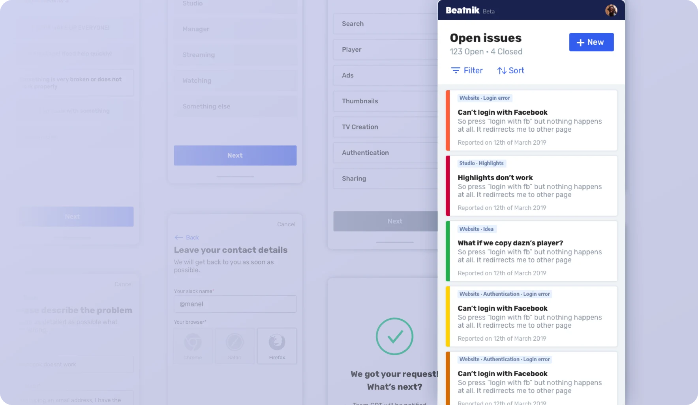
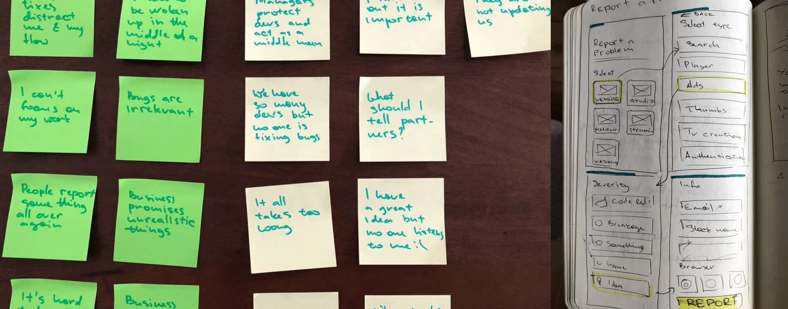
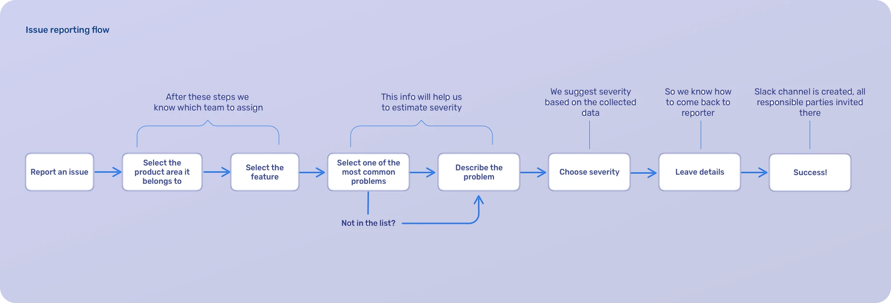
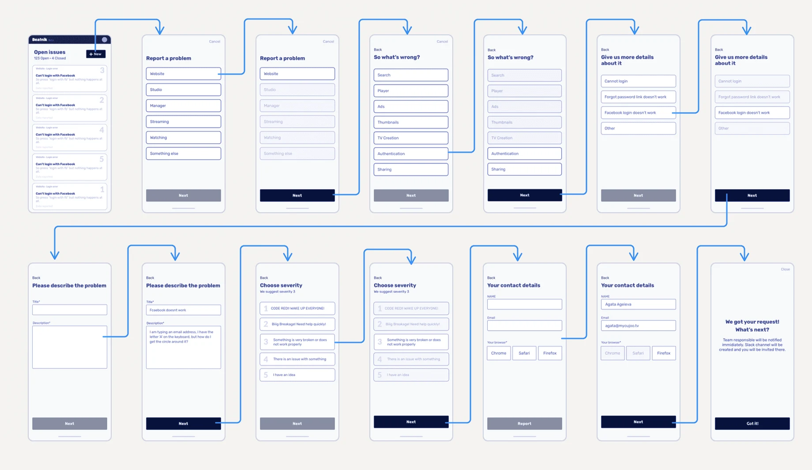

March 2019
Archive
Beatnik, a bug reporting tool
A side project with two engineers: a tool for MyCujoo employees to report bugs, follow their status, and get each one to the team responsible for it.

- Discipline
- Side project
- Company
- MyCujoo
- Year
- 2019
- Team
- Me and 2 engineers
01
Problem
With over 100 people in five offices across time zones, bug reports flowed through two Slack channels with dozens of messages a day, plus Jira and Asana.
Engineers were interrupted by issues outside their scope, sometimes at night. Business developers didn’t know who would fix a problem, or whether anyone would.
02
What I did
I talked to both sides, then we scoped an MVP: a color-coded list of reported issues; a reporting flow that collects enough data to assign the right team and person automatically; a severity estimate based on that data; and a Slack channel for each issue, with the reporter and the people fixing it.


03
Impact
There are still bugs, but there is now one place and one process for reporting them, and the Slack channels got much calmer.

04
Next steps
Reporter and resolver roles, status updates, and a check for similar reports before someone files a new one.